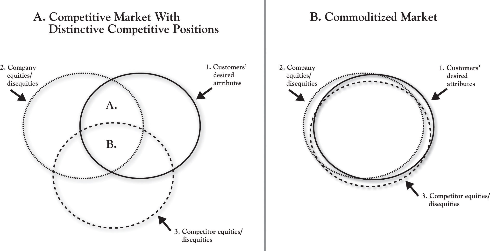
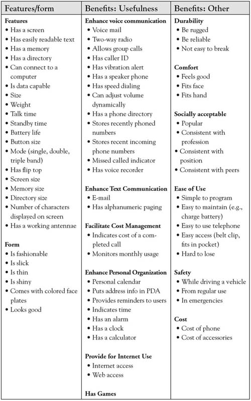
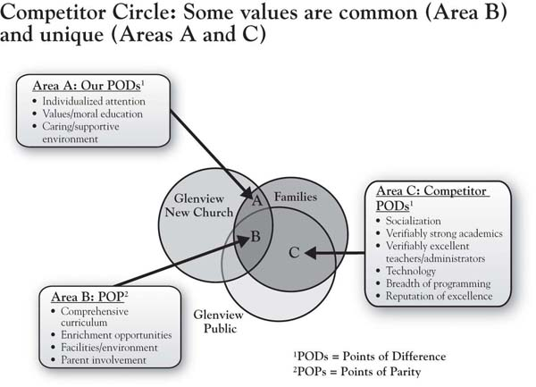
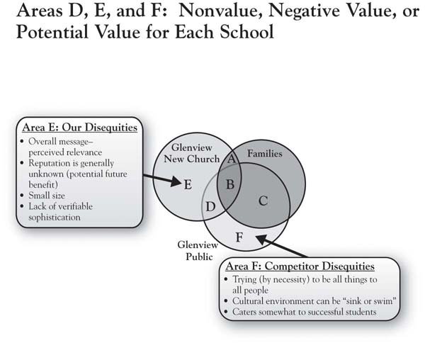
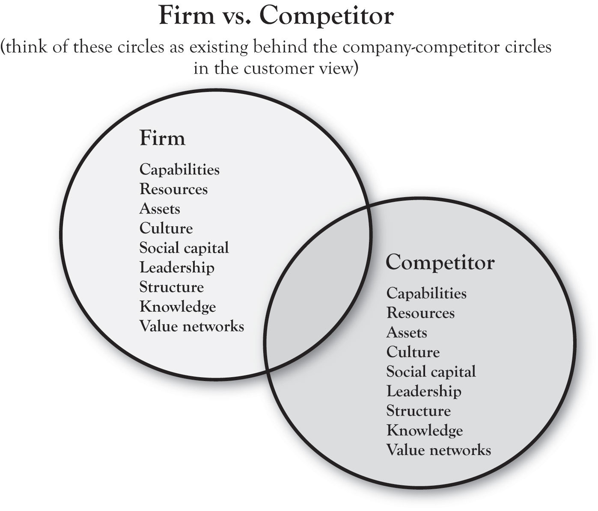
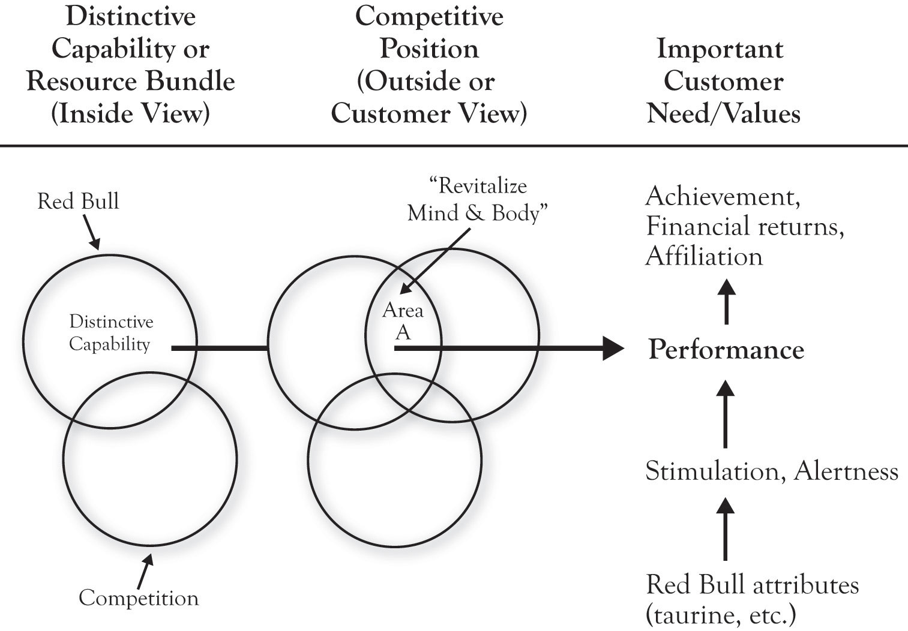
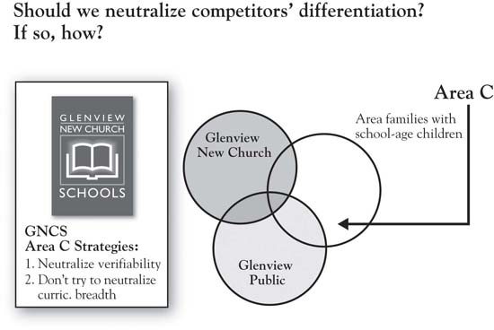

Booklet Binding, Inc., is a Chicago-based provider of finishing services for printers and publishers. The company provides folding, binding, cutting, and gluing services for printers preparing all forms of printed materials, including direct mail pieces. Started in 1976, the company distinguished itself from sleepy competitors by building fast service with the latest technology, making large gains in market share. By the mid-1990s, the competition had caught up. Customers increasingly saw the market as “commoditizedCompetitors believe they are delivering similar products with similar service levels.,” with competitors each believed to be delivering similar products with similar service levels. This led, much more quickly, to conversations about price and pressure to lower prices. In fact, this pressure became so significant that the company’s salespeople began to introduce price into the conversation before customers even began to talk about it!
Commoditization is a real issue in most industries, as markets have become increasingly hypercompetitive and as competitive imitation of new ideas has become fast and furious. In this chapter, we will introduce the concepts in the 3-Circle model by considering customer value and how competitive forces evolve in a market, putting a premium on tools to understand that evolution. Commoditization is one of many strategic problems that is well addressed by the model.
There is a state in an industry in which all competitive products or services have evolved to look the same, that is, to appear undifferentiated. Investopedia defines commoditizationA product becomes indistinguishable from others like it and consumers buy on price alone. as a situation in which “a product becomes indistinguishable from others like it and consumers buy on price alone.”Investopedia, a Forbes digital company. Rangan and Bowman (1992) were among the earliest to explicitly discuss commoditization as signaled by “increasing competition, availability of ‘me-too’ products, the customer’s reluctance to pay for features and services accompanying the product, and pressure on prices and margins in general.” As products or services become more similar in a market, there is an increasing reluctance among buyers to pay high prices. Picking up with our basic diagram from Chapter 1 "The Challenges of Growth", Figure 2.1 "Market With Distinctive Competitive Positions vs. Commoditized Market" (part A) depicts a competitive market in which two different competitors (or competitor groups) show some degree of differentiation. Recall from Figure 1.3 "3-Circle Illustration of Ultimate Ears’ Competitive Advantage" in Chapter 1 "The Challenges of Growth" that Area B represents common value or “points of parity”—this is the value that customers believe both competitors provide. In contrast, Areas A and C capture what is unique about the two competitors. The firm in this example shows a healthy Area A and its competitor shows an equally healthy Area C, indicating that each firm is believed by customers to create unique value in ways the competitor does not. An example might be the market in which Booklet Binding, Inc., initially competed, where it created a distinctive position around service and speed that could not be matched by the smaller, traditional, competitive “craftsmen” in the industry, whose smaller size and longer customer relationships could differentiate them.
Fast-forward 15 years, and what you find is a market with a great deal of overlap in the value being provided by each competitor. Panel B of Figure 2.1 "Market With Distinctive Competitive Positions vs. Commoditized Market" illustrates what happens in a commodity market. The predominant feature of this diagram is the enormous Area B, simply indicating that customers perceive a lot of common value. In other words, over time, the competitors have copied each other’s advantages, and, as a result, they may largely be indistinguishable in the eyes of the customer—hence, the renewed focus on price to seek to gain customers’ favor. Yet this often ends up in lost margin and blood on the income statement rather than competitive advantage.
The goal of this chapter is to introduce the 3-Circle model concepts in more depth, with the aim of illustrating how its primary goal of understanding how—in a market—value is perceived to be “shared” among competitors and how it is actually created. As it turns out, the primary way out of commoditization is through deeply exploring customer value in order to identify and understand needs that have not been well articulated. This is one of the core insights of the 3-Circle growth strategy process.
Figure 2.1 Market With Distinctive Competitive Positions vs. Commoditized Market
The easiest—and, in fact, most powerful—definition of customer valueThe customer’s sense of what benefits they get from a firm relative to the price they pay. is that it is the customer’s sense of what benefits they get from a firm relative to the price they pay. There is a way to quantify this, which we will see. But the fact is that most firms use the term loosely, without much precision—a topic of some consideration in Chapter 4 "The Meaning of Value". It is a term that seems to have intuitive meaning to people, which can be dangerous. One manager might be talking about the quality of a product, while another may be thinking about price. But each is defining this under the rubric “value.” We will provide a more formal definition of customer value shortly, but first consider why the concept of customer value is important in the first place.
The best way to answer the question of why customer value is important is to think about how customer value plays into the bottom line of the firm. Global customer value expert Ray Kordupleski has an excellent chapter in his book Mastering Customer Value Management that goes to great lengths to illustrate very strong relationships among measures of customer value perceptions, market share, and profitability.Kordupleski (2003), chap. 1. The truth is that firms create financial value most effectively by first focusing on the value they create for customers. At the highest level, it is easy to illustrate that profit is a function of revenue and cost:
profit = total revenue – total cost.Further, total revenue can be broken down as a function of volume and price:
total revenue = Q * price,where Q is equal to the sales volume of the product or service (how many units we sell) and price is how much we charge customers for it.
Then, a simple way to think about Q (how much we can sell) is that it is determined by customers’ choices. First, we sell more when more customers choose our brand over competitive brands. Second, the reason customers will tend to choose our brand over competitors is that they believe our brand is a better value for the money.
So think of chicken.The Perdue chicken example presented here is a standard case for explaining the basics of customer value, and is sourced from Gale (1994). Twenty years ago, chicken was a commodity product in the grocery store. Different brands were perceived to be very similar and were sold at similar prices. Perdue chicken was one of those brands. Considering the definition of value given previously, we can envision a scenario that defines a commodity market:
where the ratios can be thought of as capturing each brand’s value for the money (“was that product or service worth what I paid for it?”). If the two ratios are equal, you have a commodity market. It is a coin flip to determine which brand a consumer will choose.
In the face of this situation, Frank Perdue did something to change this market. Based on a study of the value that customers sought from chicken, Perdue concluded that consumers wanted meatier, yellower chicken, with no pinfeathers. He then put significant research and investment into breeding and technology that would produce plumper chickens with yellower skin, and processing with turbine engine blow-drying to remove pin feathers on the skin. Essentially, Perdue substantially increased the numerator in his value ratio, greatly enhancing the benefits that consumers received from his chicken. A creative advertising program further enhanced those benefits by communicating the uniqueness of Perdue chicken and conveying Perdue’s no-nonsense personality. At equivalent prices, the Perdue brand became a clear choice for the consumer of the competitive brand Z because it delivers more effectively on important consumer benefits sought.
Considering the relative value ratios, although the denominators are essentially the same, the Perdue numerator is larger, making the overall ratio larger. Interestingly, though, as Perdue’s sales grew as a result of the improved product, competitive brands began to reduce their prices to try to defend their market shares. Yet many consumers still stuck with the higher-priced Perdue brand, meaning they were willing to trade-off higher prices for better chicken. In sum, even at a higher price point, Perdue’s benefits were still considered to be a good value for the money. This was the foundation for Perdue chicken establishing a very profitable niche in the retail grocery market.
So, to this point, a few fundamentals are important:
The 3-Circle model provides a method of explicitly identifying the current state of customer value in a market and a variety of sources for improving a firm’s competitive position and profit potential. In introducing the 3-Circle model here, in Chapter 2 "Introduction to 3-Circle Analysis", we will first take you through what we refer to as the “outside” view. This represents the customer’s view of the world. Yet it is important to briefly distinguish this outside view and what we later refer to as the inside view.
The outside viewThe customer’s perception of a company’s value and competitors’ values. is what customers believe about us. The outside view is the front office or maybe even the front window. It captures the impressions our customers, and potential customers, have about us based on what they observe: seeing and using our products and services, our pricing, distributor relationships, exposure to our marketing communications and to word-of-mouth from others familiar with us, and so on. The outside view is the customer’s perception of our value and competitors’ value. It is the rock musician’s beliefs about the Ultimate Ears monitors and the benefits he or she derives from them.
In contrast, the inside viewThe assets, resources, capabilities, and knowledge that the company brings to bear in producing value for its customers. is the back office. It is what we really are on the inside—the assets, resources, capabilities, and knowledge that we bring to bear in producing value for customers. The inside view is what we really are and can do. For Ultimate Ears, this reflects the true capability the company has for research and development, product design, manufacturing, sales, and customer relationship management in serving the market.
The distinction between outside and inside is very important. We will learn that there are many, many times that customers’ view of a company does not match the actual value that the company is creating or can create. Further, as George Day of the Wharton School first suggested, true competitive advantage occurs only when the distinctive value produced for customers is produced by real capabilities and assets that competitors cannot match.Day (1994, October).
We will formalize this discussion in Chapter 4 "The Meaning of Value", but our first premise is that customers purchase and consume value in the form of product attributes. Derived from the Latin root attributus (which means “to bestow”), the word attributeAn inherent characteristic or quality of some object. means an inherent characteristic or a quality of some object. In the same way that people can be described as a bundle of characteristics (height, weight, gender, ethnicity, age), goods and services can be described based on size, cost, quality, reliability, and reputation.
In fact, it is surprising how precisely we can characterize the attributes or features of products and services. We started with a relatively simple description of chicken—with dimensions of meatiness, color, presence of pin feathers, and price. More complex product categories (e.g., dishwashers) might have over 100 attributes when functional qualities, design qualities, pre- and post-purchase services, and perception of transactional factors are taken into account. Figure 2.2 "Customer Values for Cellular Telephones" (Column 1) provides a partial list of the attributes of cell phones to illustrate how value can be broken down into component parts.
Figure 2.2 Customer Values for Cellular Telephones
Note. Adapted from “Stimulating creative design alternatives using customer values,” by R. L. Keeney, 2004, IEEE Transactions on Systems, Man, and Cybernetics-Part C: Applications and Reviews, 34, 50–459.
The first fundamental insight of the 3-Circle model is that we can learn a lot about firms’ positions in a market by sorting the attributes in a way that clarifies customer beliefs about which competitors get credit for which attributes and benefits. The framework provides a strategically meaningful way to categorize current attributes and anticipate the creation of future value. An organization gets insight into its current and future competitive position by examining how value can be broken down into attributes, determining how important those attributes are, and identifying what attributes customers associate most strongly with each competitor.
What follows is an illustration of the output of a 3-Circle analysis. For the illustration, we use the case of a small church-based primary school. Although one might believe education to be a commoditized market, in fact, the analysis reveals some interesting, very natural differences in competitive positions. It is also important to note that the analysis here is based on the same exercise in examining growth strategy as one would undertake in any competitive market. While the focus again is on output here, subsequent chapters will provide detail on process.
Glenview New Church is a religious organization in Glenview, Illinois, headed by Pastor Peter Buss. The church has a small primary school for kindergarten through 8th grade. With the school still early in its development, Pastor Buss undertook a 3-Circle analysis in the interest of building growth strategy. Pastor Buss focused on parishioners, parents of younger school-aged children as the market segmentAn identifiable group that shares one or more characteristic. to study, and the Glenview Public Schools as the competitive target. The goal of a 3-Circle analysis is to build a growth strategy for Glenview New Church School (GNCS) via a deep study of the customer’s view of competitive positions (outside view) and an internal analysis of the school’s current capabilities and assets (inside view). We begin with the outside view.
Having identified the target customer segment for the analysis as young parishioner families with school-aged children, we can depict the customer circle as reflecting the value they seek. What are the attributes of schools that affect family choices? There are several that are straightforward:
These are some of the basic criteria families will use to evaluate the schools they are considering.
A more complete listing of attributes that emerged from the analysis is given in Figure 2.3 "Glenview New Church School: Customer Circle". These attributes and considerations are determined by conversations with the target segment. These concerns are familiar, relating to curriculum, quality of teaching, school culture, facilities, and so on. The list is generated from thoughtfully listening to people describe how and why they chose their school or are considering their choice of schools. Of course, not all of these factors are considered by all families. Some factors are more important than others. In fact, we can usually group customers together in terms of the factors that are most important in their decision making. These groups are called market segments, and such groups will be considered in more depth in Chapter 3 "Defining the Context". For the moment, we will summarize the area of the customer circle as capturing the value a particular customer segment is seeking—in other words, what the customers want.
Figure 2.3 Glenview New Church School: Customer Circle

In Figure 2.4 "Glenview New Church School: Adding the Company Circle", we add a circle that represents the customer’s perception of how well our company (in this case, Glenview New Church School) is delivering on the value that the customer is seeking. At this point, it is very important to distinguish the fact that the circle represents customer perceptionWhat the customer thinks about a company, not what it actually offers.—it does not represent what we actually offer or what we think we offer. This distinction is critical in emphasizing that the outside view focuses on what customers believe rather than what we (the firm) believe the reality to be.
As we know from Chapter 1 "The Challenges of Growth", bringing these two circles together produces the simple distinction between positive value (the overlapping area), nonvalue or negative value, and unmet needs.
Pastor Buss discovered that families recognized the school for its comprehensive curriculum, for a caring and supportive environment, and for a value- and morals-based education. In addition, they felt that the school facility met their needs, including availability of after-school enrichment programs and parental involvement. We will expand upon the other two areas (nonvalue or negative value and unmet needs) as we build the analysis out. Suffice to say that there are a number of positives that Pastor Buss heard from families. Yet the surprise in this analysis occurs when we subsequently learn that our competitor not only has many of the same positives, they also have some positives that we don’t have! So the next step is to add a circle that represents customer perception of the competitor, in this case, Glenview Public Schools.
Figure 2.4 Glenview New Church School: Adding the Company Circle

Among other competitors for GNCS, Glenview Public School District 34 (GPSD) is formidable. Glenview has a total enrollment of over 4,300 students across 3 primary, 3 intermediate, and 2 middle schools. Four of the schools have been selected as National Blue Ribbon schools. There are 370 teachers, with an average of 8 years teaching experience, three-quarters of whom have a master’s degree. What are the beliefs of parents regarding the value provided by the Glenview public school system?
Figure 2.5 "Glenview New Church School: Adding the Competitor Circle" introduces the competitor circle, illustrating some very important distinctions. First, one striking point is that of all the dimensions of positive value for GNCS depicted in Figure 2.3 "Glenview New Church School: Customer Circle", only about half are unique to Pastor Buss’s school relative to the competitor (individualized attention, values- and moral-based education, and caring and supportive environment, which define GNCS’s Area A, or points of difference). The attributes on which GNCS is believed to be about the same as GPSD are comprehensive curriculum, facilities, enrichment (after-school programs), and parental involvement. This latter set of attributes is labeled Points of Parity (Area B), as the competitors are “at parity”—that is, neither is believed to have a unique advantage. In other frameworks, these dimensions are given other labels (e.g., table stakes; expected product) but have the same basic meaning. These are the factors that customers fundamentally expect all schools to deliver on in order to be in the consideration set.
What was striking to Pastor Buss, however, was to identify the points of difference for GPSD, the competitor (Area C). GPSD got a great deal of credit for the breadth of its curriculum, its technology, its greater opportunity for socialization among a diverse population, and its reputation. But one dimension that surprised Pastor Buss and his team was the heavy weight that parents placed on the notion of “verifiability” in both academic performance and teacher credentials. This weight is consistent with the attention that standardized testing has received since the passage of the No Child Left Behind Act of 2001 (NCLBA), requiring performance standards for adequate yearly progress for public schools. Illinois private schools such as GNCS are not subject to the same performance standards and are therefore not required to administer standardized tests. Pastor Buss discovered that standardized test scores as evidence of academic performance were a major positive point of difference for Glenview Public—and therefore a disequity for GNCS.
Figure 2.5 Glenview New Church School: Adding the Competitor Circle
Figure 2.6 "Glenview New Church School: Areas of Nonvalue, Negative Value (Disequities), or Potential Value" focuses on the areas of the model that, for both firms, fall outside the customer’s circle. By definition, these areas reflect the firms’ attributes and benefits that are unimportant to customers or do not meet customer needs. Areas D, E, and F capture value that is being produced by the competitive firms that fits into one of two categories:
Figure 2.6 Glenview New Church School: Areas of Nonvalue, Negative Value (Disequities), or Potential Value
In the case of Glenview New Church School, the public school’s strength in verifiable academic performance is actually a unique disequity, which would define it as falling into Area E. Simply, parents have a more difficult time choosing a school in a post-NCLBA world if the evidence of performance is not offered up. The notion of verifiability both in terms of school performance and staff credentials was something of a surprise to the GNCS management team. In his study, Pastor Buss’s analysis for GNCS did not reveal any items of common disequity (Area D) for the two schools.
In addition, Pastor Buss was surprised to hear that many parents were not clear on the church’s mission for the new school. There were two dimensions of this. First, the reputation of the school was generally unknown among some parents. Second, some of those who were aware of the school conveyed that the church’s communications about the school were not perceived as relevant—that is, they did not personally connect with the messages. The sum total of these two concerns is that the school’s identity was difficult to pin down, which can be a disequity in the customer’s eyes.
As we will see, these areas turn out to be very important, in part because there are strategic options for dealing with these concerns that have implications for growth. Attributes or benefits one finds in Area E, for example, might be (a) maintained, (b) eliminated to save cost, or, ironically, (c) actually built into potential satisfiers.
Innovation is a critical component of growth strategy for many organizations today. As such, it is critical to have a systematic way of motivating the search for new customer value ideas. The 3-Circle model gives meaning and language to the need for innovation.
Figure 2.7 "Glenview New Church School: Area G, Unmet Needs" focuses on Area G, which we label the “white space.”We thank Viva Bartkus for suggesting this term. This region of the framework actually has two different dimensions or meanings, both critically important. The white space generically captures value desired by the customer that is not currently being fulfilled by either the firm or its competitor. Those needs may be (a) currently known and top-of-mind or (b) less known (latent). Needs that are currently known and top-of-mind are often obvious in customer complaints; therefore, many clues about unmet needs might be found in the attributes that end up in areas D, E, and F. For example, the travel industry is complex and rife with consumer dissatisfaction due to late planes, mistaken communications, and confusing airline loyalty programs, among other factors.Higgins (2008, June 1); Haberkorn (2008, May 28). In short, there may be needs the customer has that are known and that have not yet been satisfied.
Figure 2.7 Glenview New Church School: Area G, Unmet Needs

Yet there are also underlying needs that may be less obvious. As we will discuss in Chapter 5 "Sorting Value" and Chapter 6 "Growth Strategy", there are approaches for exploring the white space that require deeper inquiry, and a variety of methods are available. To illustrate this distinction, notice the last two columns of Figure 2.2 "Customer Values for Cellular Telephones". While the first column deals explicitly with the features of the phone itself, the second and third columns focus on the outcomes of particular features of the phone. So, for example, while the packaging and sales discussion might focus on a number of features like screen readability, size, weight, and battery and memory size, ultimately, the customer wants to get a sense of how this phone will help them in voice and text communication, personal organization, durability, safety, and comfort. The latter reflects deeper needs, which might more powerfully guide product development by providing a clearer understanding of customer problems to be solved.
In his analysis of GNCS parents’ decision making regarding schools, Pastor Buss utilized a research approach called “ladderingDrills down into deeper reasons underlying customers’ interest in the attributes of a product or service.,” which effectively drills down into deeper reasons underlying customers’ interest in the attributes of a product or service. So why are attributes like individualized attention, comprehensive curriculum, and values-based curriculum important to families as they choose among schools? Figure 2.7 "Glenview New Church School: Area G, Unmet Needs" reveals several interesting values that Pastor Buss identified in his in-depth conversations with customers. These values relate to the deeper goals that parents have for their children—becoming a likable, honest person; navigating a cultural minefield; wanting their child to have it better than they did. These are not attributes of the school but are ultimately outcomes of the school’s attributes. They are unmet in the sense that they probably can never be completely resolved. At the same time, the school’s efforts to speak to these values in program development, hiring, and communications will have a very big impact on the value that parents find in the school.
Note that these deeper values are hardwired in us. No firm “creates” needs—they are built into us and drive our daily behaviors. However, most of us as consumers (and as managers) do not really think about these deeper drivers on a regular basis. But recognizing their existence—by keeping a focus on Area G in growth strategy planning—can offer dramatic insight into customer value and impact on growth strategy. An example is a case involving the Rust-Oleum management team. Rust-Oleum is a well-known manufacturer of high quality paints, with its brand anchored around its historically highly effective rust-preventative paints. Facing pressure from retail store category managers to lower prices, company management found deeper concerns about category profitability (and, likely, personal achievement) in the retail category managers’ protests. Instead of cutting prices, the Rust-Oleum team sought to more deeply understand the problem that category managers were attempting to solve. They concluded that the retailers’ real issue was not a need to extract more margin from individual vendors but, instead, a need to improve the overall profitability of their small project paint category. In response, Rust-Oleum created a data-driven approach to category management for small project paints, helping retailers significantly improve sales and profit from the paint category and producing double-digit growth in sales of its own brand.
The lesson is that in any product or service category, needs are never completely fulfilled. Area G is a critically important source of potential value to be added in a market that can fuel growth. It is important to note that Pastor Buss’s analysis of GNCS was undertaken on his own, with guidance from the 10-step 3-Circle growth strategy process that is summarized in Chapter 9 "Summary: Growth Strategy in 10 Steps" of this book. We will discuss the implications of this analysis for the school’s growth strategy, but we will first consider the concept of the inside view.
In 3-Circle analysis, significant insight is gained by thinking of the circles as having deeper layers. For example, Pastor Buss found that at the core of parents’ decisions about schools was a deep concern about their child’s development as an honest human being and achievement in later life. Similarly, the company circle has depth to it. That is, residing behind or inside the company circle that customers see are the capabilities, resources, assets, and value networks that the firm uses to create value for its customers.This dimension of the model is informed specifically by the works of Day (1994, October), Barney (1991), and Kumar (2004).
Figure 2.8 "The Inside View" provides a simple schematic of the dimensions on which the inside view might be discussed. The circle on the left results from an analysis of our company’s resources, capabilities, and assets (which we will refer to as RCAResources, capabilities, and assets.). The circle would “contain” a weighted listing of our RCAs, to be compared to those of the competitor, captured by the circle on the right. Note that the two circles overlap, which suggest that the firms have some capabilities in common. Yet each firm has unique RCAs as well.
This brings us to the ultimate definition of distinctive competitive advantage (following the work of Michael Porter and George Day). True competitive advantage exists when the attributes or benefits that reside in Area A in the outside view of the model (seen by customers) are the product of the firm’s unique RCAs. In other words, the strongest, most sustainable competitive advantage is one in which the firm’s unique position in the mind of customers (Area A) is produced by capabilities and resources that competitors cannot match.
Figure 2.8 The Inside View
At the heart of the framework is the idea that true competitive advantage comes from aligning the firm’s distinctive RCA to important customer values in ways that competitors do not. To illustrate, consider Red Bull, the brand that pioneered the “functional energy drink” beverage category. Figure 2.9 "Red Bull’s Alignment of the Inside and Outside Views" illustrates, in simple terms, the idea of alignment. The company built a variety of distinctive capabilities around research and development, product development, and (later) branding and marketing communications. Based on these capabilities, the company developed unique strategies for product (a research-based formula including the newly introduced ingredient taurine), distribution (refrigeration units and display innovation in retail stores, building relationships with clubs), and promotion (sponsorship or creation of high-energy events and athletes). These tactics were driven by the Area A positioning strategy “revitalizing body and mind,” ultimately delivering uniquely on the basic needs of combating mental and physical fatigue in people seeking performance, achievement, or socialization. IBISWorld reports that, as of 2010, Red Bull has a 70% share of the “energy drink” segment of the functional drink category.IBISWorld (2010).
The Red Bull case illustrates an important point regarding a common misconception about what most people believe to be vacuous marketing practices as a key to marketplace success. Without the foundation of key capabilities and resources in execution, communications campaigns that seek to create image are doomed to fail. The most successful brands and products are those that deliver on the promises made in positioning via strong core capabilities. In describing the history, structure, philosophy, and success of the Mayo Clinic—one of the most successful and important enterprises in American business history—Len Berry and Kent Selman (2008) note, “Smart executives understand that advertising effectiveness over time depends on advertised goods or services delivering what the organization promises.” In sum, the brand is a result of performance of the product or service. For Glenview New Church School, capability development is critical. GNCS’s current Area A is essentially built around its small size, individualized attention, and morals-based education. As we will see, there are opportunities for developing growth strategy that are based upon building new capabilities.
Figure 2.9 Red Bull’s Alignment of the Inside and Outside Views
The most significant contribution of the 3-Circle model is the guidance on growth strategy that falls relatively easily out of an effective customer analysis. We will use the GNCS example to quickly illustrate this. First, recall our basic definition of customer value:
As noted, this ratio is important in suggesting that the firm increases the chance that the potential customer will choose their brand when they either increase the numerator relative to the competition or reduce the denominator. Apple and Dell represent polar opposites in terms of competitive positions—Apple differentiated around excellent design and functionality (with margin driving its profitability) and Dell focused more on efficiency, low-cost basis, and aggressive pricing (with high volume driving its profitability). In some ways—and with certain exceptions—we might refer to Apple as a numerator company and Dell as a denominator company. Each creates significant value for its customers but in very different ways.
As a self-funded private school, GNCS does charge tuition. It gives regular parishioners a discount from the stated tuition level. For the purposes of our discussion here, we will not introduce a tuition cut into the mix for GNCS. However, it is important to note that price reduction—when financially well reasoned—is a plausible alternative here, particularly if it is accompanied by cost reductions.
We will organize the consideration of growth strategies around four questions. Although we will later see that there are additional growth strategy implications that emerge from the model, these four questions are most fundamental.
The 3-Circle model makes a fundamental premise of competitive strategy very plain: The firm must be different from competitors in ways that matter to customers. One of the most valuable aspects of the model is the manager’s ability to teach colleagues and staff this notion. But beyond just conveying understanding of the notion that all firms must have points of difference to grow there are important implications in (a) first discovering our points of difference from the customer’s perspective (often, they are not what we expect) and then (b) thinking through how we can build and defend them. In a subsequent chapter, we will detail the bases for differentiation and the variety of ways that firms attack this important element of strategy. For the GNCS example, growth question 1 is summarized in Figure 2.10 "Growth Question 1".
Although relatively new, GNCS does have a differential advantage over the public schools in its small size, caring environment, and potential for individualized attention to children. These are natural advantages, but the team at GNCS decided that they could be leveraged in two ways. These two secondary questions form a foundation for growth strategy in each of the general categories we will discuss:
Figure 2.10 Growth Question 1

Figure 2.11 "Growth Question 2" identifies a series of questions about Area E, which we only summarize here and save for greater depth later. In some ways, this is even a higher short-term priority than building Area A. Very often in this analysis, firms find that customers raise concerns that they were not aware of, and find that these concerns are sometimes based on misconceptions. Again, GNCS discovered a general lack of awareness of the school’s value proposition. The clear growth strategy emerging from this is conducting an audit of all communications media and touchpoints, as well as all opportunities to clearly convey the school’s mission and, again, how it connects to the Area G values identified. Probably the most significant disequity defined for GNCS was the fact that they lacked the test scores that would provide credible evidence of both the school’s academic excellence and the teaching staff’s credentials, the former because the school had not undertaken the standardized tests and the latter because they had never thought to communicate teacher credentials. In their analysis, GNCS discovered the importance of building a capability in standardized testing and in very clearly promoting their teachers’ advanced degrees.
Figure 2.11 Growth Question 2

In Area C reside the competitors’ strengths. Growth for our firm may be produced by offsetting or neutralizing these (Figure 2.12 "Growth Question 3"). One can see the complementary relationship between Areas C and E here—the competitor’s advantages (Area C) may, at times, be seen as the firm’s disequities (Area E). The issue of whether or not the firm should vigorously attack Area C depends—to what degree do we have, or can we build, a credible attack on the competitor? What are the costs of, and returns from, such an attack? In the case of GNCS, neutralizing the public school’s advantage on verifiability (i.e., building the standardized testing capability) is straightforward. This is essentially a competitive requirement today, because test scores are data that families expect each school to be able to produce (i.e., it has essentially become a point of parity). In addition, the costs of building this capability are reasonable, particularly compared to the costs of not doing it. As noted, though, the firm needs to be discriminating about which Area C dimensions to attack. Given resource constraints and a more focused mission, it would not make sense for GNCS to seek to broaden its curriculum to match the curriculum breadth of GPSD, for example.
A related growth strategy question that falls roughly into the category of growth question 3 is the question of whether or not to attack or leverage the competitor’s disequities (Area F). To the extent that such deficiencies are strategically important (i.e., associated or potentially associated with customer value), these dimensions represent an opportunity to directly attack the competition to take away customers. Overcoming deficiencies involves making better products or services than the competition and distributing them more effectively. In addition, communications strategy can point out the problems with the competitor’s offerings. Research on comparative advertising suggests that a direct attack on a smaller competitor is generally a bad idea for a market leader. But the fact that it may work for an underdog is reflected in Apple’s brilliant “Get a Mac” campaign, which cleverly and effectively positioned Microsoft as an overconfident (if insecure), bumbling nerd of a competitor.
Figure 2.12 Growth Question 3
Customers’ needs are never fully met. There are always problems somewhere in the customer’s consumption chain for which alternative solutions might be developed that could serve to ultimately build Area A. This includes both functional value (e.g., suitcases with wheels and golf bags with stand-up legs are only recent inventions in a long history of travel and golf), and deeper psychological or social value (e.g., helping parents feel more confident about the chances for their children’s future success). To illustrate, consider the human value “control.” Deep-seated and highly influential in guiding our behavior, the desire for control is what is called an instrumental valueValue as a means to another end or value.. That means that it is an intermediary of a value—that is, it helps lead to other terminal values like peace of mind or security.Wilkie (1994). But the overriding point is straightforward: We value feeling in control. In general, humans like to feel a sense of certainty and predictability. Through evolution, this has just been hardwired into our systems. When companies can help us feel more in control, there is value there that is worth paying for. Thinking about the values (control), as opposed to product features and attributes, tends to open up thinking about potential solutions for customers. It is easy to find examples of new innovations that connect with customers because they touch our sense of control:
We will expand our discussion of values in Chapter 4 "The Meaning of Value", but, for now, we point out that the exploration of Area G for growth opportunities requires going beyond the current conception of the product or service. It requires a way of exploring customers’ deeper problems, needs, and motives.
At the chapter’s opening, we discussed Booklet Binding, Inc. (BBI), the firm competing in the market for printed booklets that had become commoditized. After deeper study of customers’ purchasing patterns and needs, the company turned itself around by listening more carefully to individual customer needs and by expanding the definition of its product. It found that customers would significantly benefit from sales programs that anticipated their promotion schedules over time, reminded them of previous orders, and helped them plan ahead. It also found that they could create value for customers through education on topics that helped customers improve their efficiency and sales effectiveness. These efforts not only enhanced customers’ sense of control over at least one aspect of their business, it also helped BBI customers create more value for their customers. This required redefining what BBI considered to be its core product and service capabilities, but in doing so, the company was able to recapture a substantial part of the market and to improve profitability.
Regarding GNCS, we have already made some mention of the values that Pastor Buss uncovered in Area G. Given this depth of understanding of the values driving family school choice, the GNCS team should evaluate all existing programs in terms of how well they deliver upon these values (see Figure 2.12 "Growth Question 3"). Subsequently, the team should strive to build the programs that most directly address these values and perhaps eliminate programs that do not. So an after-school program that can be understood to have the benefits of preparing primary school students for middle school is likely to have a greater impact than one that has a more general positioning. New programs might be built specifically around the life skills that contribute to the children’s ability to navigate challenging circumstances, like decision-making skills.As an example, see the curriculum developed by Tom Reynolds and team for teaching children a framework for decision making. See the website http://lifegoals.net/ and Warner (2004). Finally, it is important for GNCS to reflect these values in their communication with prospects.
Figure 2.13 Growth Question 4
Pastor Buss and the GNCS team are still working on implementing the strategic directions that emerged from the 3-Circle project. They have built an impressive staff and communicated their credentials, implemented standardized testing processes, and are in the process of hiring new leadership. While the development of the school will take time, and the development of new teaching paradigms like differentiated instruction will be up to the new school leaders, Pastor Buss reports being “sold on the 3-Circle model” and process that led to the current growth strategy for the school.
The simple truth is that your business is more profitable when you lead it with a careful view to customer value. However, there is much lip service given to customer value and customer satisfaction these days because we have few disciplined ways to think about and evaluate it. The 3-Circle model provides such discipline in asking the right questions and providing guidance on the right answers for growth. The key benefits of the framework are the following:
The outside view of the framework captures the front office—that is, it focuses explicitly on customer perception of the firm and its competitor. The analysis of the outside view produces a categorization of value in 7 categories, as summarized in Figure 2.14 "Summary: Outside View". The key competitive concepts reflected in this figure, and the associated growth strategy implications, are as follows:
Figure 2.14 Summary: Outside View

The inside view of the 3-Circle model captures the back office: the work, processes, capabilities, assets, and resources that are utilized in creating customer value. In the end, the most powerful competitive advantage emerges when your distinctive Area A, as perceived by customers, is a function of real, substantive, and distinctive capabilities and assets. Finally, the framework identifies a variety of actionable, high-impact ways in which a firm can enhance its growth prospects by building customer value that is superior to that of the competitors.
Chapter 1 "The Challenges of Growth" and Chapter 2 "Introduction to 3-Circle Analysis" have provided an overview of the framework and an introduction to the key concepts within it. Now it is time to get busy with an exploration of the core concepts in the model. Chapter 3 "Defining the Context" starts with the start—defining the context for your growth strategy analysis.